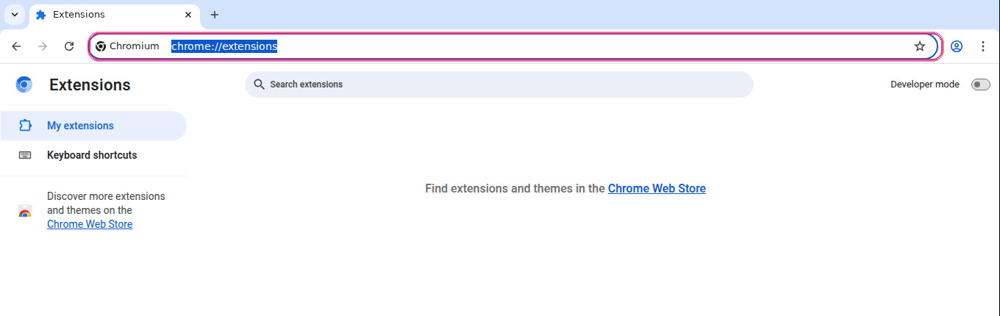
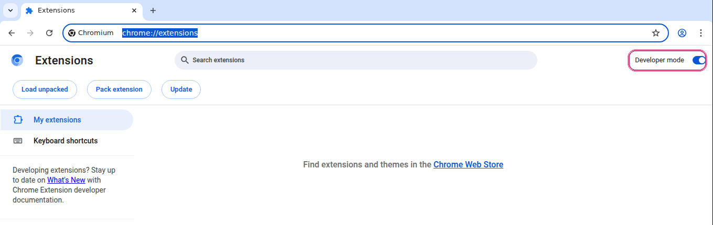
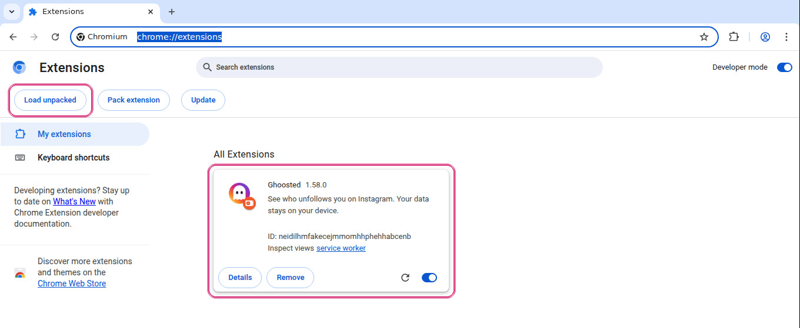
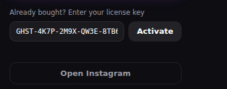

Five minutes. No Chrome Web Store needed: it installs straight from the file you download when you buy.
What you need
A computer with Chrome, Edge, Brave or Opera. Phones can't install extensions, but you'll be able to read your data there later with a QR code.
The .zip file you get when you buy.
Your key, starting with GHST-.
1 · Unzip the file
Unzip it into a folder you won't delete — Documents, for example. Don't leave it in Downloads if you empty that.
This matters: the browser doesn't copy the extension anywhere, it reads it from that folder every time it starts. Delete or move it and Ghoosted disappears.
2 · Open the extensions page
Type chrome://extensions in the address bar. Other browsers: edge://extensions, brave://extensions, opera://extensions.

The address bar, with chrome://extensions typed in
3 · Turn on Developer mode
Top right there's a Developer mode switch. Turn it on — without it the next button doesn't appear.

The Developer mode switch, top right
4 · Load the folder
Click Load unpacked and pick the folder you unzipped — the whole folder, not the .zip and not a single file inside it.
If it says the manifest is missing, you picked one level too high: go in until you see manifest.json.

Load unpacked, and Ghoosted already on the list
5 · Activate your key
Open Instagram while logged in. The round Ghoosted button appears bottom right: tap it, open the gear and paste your key.
The key is tied to that Instagram account forever. Use it on as many computers as you like, always with the same account.

Where the key goes, inside the panel
If something goes wrong
"The extension isn't trusted". Chrome warns about everything that doesn't come from its store. Ghoosted is coming to the Chrome Web Store; meanwhile it installs this way.
It disappears when I close the browser. You moved or deleted the folder. Unzip again somewhere permanent and repeat step 4.
I can't see the button on Instagram. Reload the tab with Ctrl+Shift+R.
It says my key is invalid. Paste it whole, with the dashes. And a Plus key won't work on Pro, or the other way round.
Using it from your phone
Mobile browsers don't support extensions, so Ghoosted can't be installed there. What you can do is read what it already collected: gear → Connect phone, then scan the QR with your camera.
The phone only reads. It never checks on its own and never acts on your account.
Cinco minutos. No hace falta la Chrome Web Store: se instala directamente desde el archivo que descargas al comprar.
Lo que necesitas
Un ordenador con Chrome, Edge, Brave u Opera. En el móvil no se pueden instalar extensiones, pero luego podrás consultar tus datos desde el teléfono con un código QR.
El archivo .zip que te damos al comprar.
Tu clave, que empieza por GHST-.
1 · Descomprime el archivo
Descomprime el .zip en una carpeta donde no lo vayas a borrar — Documentos, por ejemplo. No lo dejes en Descargas si sueles vaciarla.
Esto importa: el navegador no copia la extensión a ningún sitio, la lee de esa carpeta cada vez que arranca. Si la borras o la mueves, Ghoosted desaparece y hay que volver a cargarla.
En Windows: clic derecho → Extraer todo. En Mac: doble clic.
2 · Abre la página de extensiones
Escribe chrome://extensions en la barra de direcciones y pulsa Enter. En otros navegadores: edge://extensions, brave://extensions u opera://extensions.
La barra de direcciones, con chrome://extensions escrito
3 · Activa el modo de desarrollador
Arriba a la derecha hay un interruptor que pone Modo de desarrollador. Actívalo: sin eso no aparece el botón del paso siguiente.
El interruptor del modo de desarrollador, arriba a la derecha
4 · Carga la carpeta
Pulsa Cargar descomprimida y elige la carpeta que descomprimiste — la carpeta entera, no el .zip ni un fichero suelto.
Si dice que falta el manifiesto, has elegido una carpeta de más: entra hasta ver un fichero manifest.json y elige esa.
Cargar descomprimida, y Ghoosted ya en la lista
5 · Activa tu clave
Abre Instagram con tu sesión iniciada. Abajo a la derecha sale el botón redondo de Ghoosted: púlsalo, entra en el engranaje y pega tu clave.
La clave queda ligada a esa cuenta de Instagram para siempre. Puedes usarla en todos los ordenadores que quieras, pero siempre con la misma cuenta.
Dónde se pega la clave, dentro del panel
Si algo no va
«La extensión no es de confianza». Chrome avisa de todas las que no vienen de su tienda. Ghoosted estará en la Chrome Web Store próximamente; mientras tanto se instala así.
Desaparece al cerrar el navegador. Has movido o borrado la carpeta. Descomprime otra vez en un sitio fijo y repite el paso 4.
No veo el botón en Instagram. Recarga la pestaña con Ctrl+Shift+R. Si la tenías abierta antes de instalar, no se entera hasta que recargues.
Dice que la clave no vale. Pégala entera, con los guiones. Y ojo: la de Plus no sirve en Pro ni al revés.
Usarlo desde el móvil
Los navegadores de móvil no admiten extensiones, así que Ghoosted no se instala ahí. Lo que sí puedes es consultar desde el teléfono lo que ya ha recogido: engranaje → Conectar móvil y escaneas el QR con la cámara.
El móvil solo lee. No comprueba nada por su cuenta ni actúa sobre tu cuenta, y lo desvinculas cuando quieras.
Cinq minutes. Pas besoin du Chrome Web Store : l'extension s'installe directement depuis le fichier que vous téléchargez à l'achat.
Ce qu'il vous faut
Un ordinateur avec Chrome, Edge, Brave ou Opera. Les téléphones ne peuvent pas installer d'extensions, mais vous pourrez consulter vos données depuis le mobile avec un QR code.
Le fichier .zip reçu à l'achat.
Votre clé, qui commence par GHST-.
1 · Décompressez le fichier
Décompressez le .zip dans un dossier que vous ne supprimerez pas — Documents, par exemple. Ne le laissez pas dans Téléchargements si vous videz ce dossier.
C'est important : le navigateur ne copie pas l'extension, il la lit depuis ce dossier à chaque démarrage. Si vous le supprimez ou le déplacez, Ghoosted disparaît.
2 · Ouvrez la page des extensions
Tapez chrome://extensions dans la barre d'adresse. Autres navigateurs : edge://extensions, brave://extensions, opera://extensions.
La barre d'adresse, avec chrome://extensions saisi
3 · Activez le mode développeur
En haut à droite, un interrupteur Mode développeur. Activez-le : sans lui, le bouton suivant n'apparaît pas.
L'interrupteur du mode développeur, en haut à droite
4 · Chargez le dossier
Cliquez sur Charger l'extension non empaquetée et choisissez le dossier décompressé — le dossier entier, pas le .zip ni un fichier isolé.
S'il dit que le manifeste manque, vous avez choisi un niveau trop haut : entrez jusqu'à voir manifest.json.
Charger l'extension non empaquetée, et Ghoosted déjà dans la liste
5 · Activez votre clé
Ouvrez Instagram connecté. Le bouton rond de Ghoosted apparaît en bas à droite : cliquez, ouvrez l'engrenage et collez votre clé.
La clé est liée à ce compte Instagram pour toujours. Utilisez-la sur autant d'ordinateurs que vous voulez, toujours avec le même compte.
Où coller la clé, dans le panneau
Si ça ne marche pas
« L'extension n'est pas fiable ». Chrome avertit pour tout ce qui ne vient pas de sa boutique. Ghoosted arrive bientôt sur le Chrome Web Store ; en attendant, elle s'installe ainsi.
Elle disparaît à la fermeture. Vous avez déplacé ou supprimé le dossier. Décompressez à nouveau dans un endroit fixe et refaites l'étape 4.
Je ne vois pas le bouton sur Instagram. Rechargez l'onglet avec Ctrl+Shift+R.
Ma clé est refusée. Collez-la en entier, avec les tirets. Et une clé Plus ne marche pas sur Pro, ni l'inverse.
L'utiliser depuis le mobile
Les navigateurs mobiles n'acceptent pas les extensions, Ghoosted ne s'y installe donc pas. En revanche vous pouvez consulter ce qui a déjà été collecté : engrenage → Connecter le téléphone, puis scannez le QR.
Le téléphone se contente de lire. Il ne vérifie rien de lui-même et n'agit jamais sur votre compte.
Fünf Minuten. Kein Chrome Web Store nötig: Die Erweiterung wird direkt aus der Datei installiert, die du beim Kauf herunterlädst.
Was du brauchst
Einen Computer mit Chrome, Edge, Brave oder Opera. Auf dem Handy lassen sich keine Erweiterungen installieren, aber du kannst deine Daten später per QR-Code dort ansehen.
Die .zip-Datei aus dem Kauf.
Deinen Schlüssel, beginnend mit GHST-.
1 · Entpacke die Datei
Entpacke die .zip in einen Ordner, den du nicht löschst — zum Beispiel Dokumente. Nicht in Downloads lassen, wenn du den leerst.
Wichtig: Der Browser kopiert die Erweiterung nicht, er liest sie bei jedem Start aus diesem Ordner. Löschst oder verschiebst du ihn, ist Ghoosted weg.
2 · Öffne die Erweiterungsseite
Tippe chrome://extensions in die Adressleiste. Andere Browser: edge://extensions, brave://extensions, opera://extensions.
Die Adressleiste, mit eingetipptem chrome://extensions
3 · Aktiviere den Entwicklermodus
Oben rechts gibt es den Schalter Entwicklermodus. Einschalten — ohne ihn erscheint der nächste Button nicht.
Der Schalter für den Entwicklermodus, oben rechts
4 · Lade den Ordner
Klicke Entpackte Erweiterung laden und wähle den entpackten Ordner — den ganzen Ordner, nicht die .zip und keine einzelne Datei.
Fehlt angeblich das Manifest, hast du eine Ebene zu hoch gewählt: geh hinein, bis du manifest.json siehst.
Entpackte Erweiterung laden, und Ghoosted steht schon in der Liste
5 · Aktiviere deinen Schlüssel
Öffne Instagram im eingeloggten Zustand. Unten rechts erscheint der runde Ghoosted-Button: antippen, Zahnrad öffnen, Schlüssel einfügen.
Der Schlüssel bleibt für immer an dieses Instagram-Konto gebunden. Nutze ihn auf beliebig vielen Rechnern, immer mit demselben Konto.
Wo der Schlüssel hineinkommt, im Panel
Wenn etwas nicht geht
„Erweiterung nicht vertrauenswürdig". Chrome warnt bei allem, was nicht aus seinem Store kommt. Ghoosted kommt bald in den Chrome Web Store; bis dahin geht es so.
Sie verschwindet beim Schließen. Du hast den Ordner verschoben oder gelöscht. Erneut an einen festen Ort entpacken und Schritt 4 wiederholen.
Ich sehe den Button auf Instagram nicht. Lade den Tab mit Strg+Shift+R neu.
Mein Schlüssel wird abgelehnt. Ganz einfügen, mit Bindestrichen. Ein Plus-Schlüssel geht nicht bei Pro und umgekehrt.
Vom Handy aus nutzen
Mobile Browser unterstützen keine Erweiterungen, Ghoosted lässt sich dort nicht installieren. Du kannst aber ansehen, was bereits gesammelt wurde: Zahnrad → Handy verbinden, dann QR scannen.
Das Handy liest nur. Es prüft nichts von selbst und greift nie in dein Konto ein.
Cinque minuti. Non serve il Chrome Web Store: si installa direttamente dal file che scarichi all'acquisto.
Cosa ti serve
Un computer con Chrome, Edge, Brave o Opera. Sul telefono non si possono installare estensioni, ma potrai consultare i tuoi dati da lì con un codice QR.
Il file .zip ricevuto con l'acquisto.
La tua chiave, che inizia con GHST-.
1 · Estrai il file
Estrai lo .zip in una cartella che non cancellerai — Documenti, per esempio. Non lasciarlo in Download se la svuoti.
È importante: il browser non copia l'estensione, la legge da quella cartella a ogni avvio. Se la cancelli o la sposti, Ghoosted sparisce.
2 · Apri la pagina delle estensioni
Scrivi chrome://extensions nella barra degli indirizzi. Altri browser: edge://extensions, brave://extensions, opera://extensions.
La barra degli indirizzi, con chrome://extensions scritto
3 · Attiva la modalità sviluppatore
In alto a destra c'è l'interruttore Modalità sviluppatore. Attivalo: senza, il pulsante successivo non compare.
L'interruttore della modalità sviluppatore, in alto a destra
4 · Carica la cartella
Premi Carica estensione non pacchettizzata e scegli la cartella estratta — tutta la cartella, non lo .zip né un singolo file.
Se dice che manca il manifest, hai scelto un livello di troppo: entra finché non vedi manifest.json.
Carica estensione non pacchettizzata, e Ghoosted già nell'elenco
5 · Attiva la chiave
Apri Instagram con la sessione attiva. In basso a destra compare il pulsante rotondo di Ghoosted: premilo, apri l'ingranaggio e incolla la chiave.
La chiave resta legata a quell'account Instagram per sempre. Usala su quanti computer vuoi, sempre con lo stesso account.
Dove si incolla la chiave, dentro il pannello
Se qualcosa non va
"Estensione non attendibile". Chrome avvisa per tutto ciò che non viene dal suo store. Ghoosted arriverà presto sul Chrome Web Store; intanto si installa così.
Sparisce quando chiudo il browser. Hai spostato o cancellato la cartella. Riestrai in un posto fisso e ripeti il passo 4.
Non vedo il pulsante su Instagram. Ricarica la scheda con Ctrl+Shift+R.
Dice che la chiave non è valida. Incollala intera, con i trattini. E una chiave Plus non funziona su Pro, né viceversa.
Usarlo dal telefono
I browser mobili non supportano le estensioni, quindi Ghoosted non si installa lì. Puoi però consultare ciò che ha già raccolto: ingranaggio → Collega telefono, poi scansiona il QR.
Il telefono legge soltanto. Non controlla nulla da solo e non agisce mai sul tuo account.
Cinco minutos. Não precisa da Chrome Web Store: instala direto do arquivo que você baixa ao comprar.
O que você precisa
Um computador com Chrome, Edge, Brave ou Opera. No celular não dá para instalar extensões, mas depois você poderá consultar seus dados por lá com um QR code.
O arquivo .zip que vem na compra.
Sua chave, que começa com GHST-.
1 · Descompacte o arquivo
Descompacte o .zip numa pasta que você não vá apagar — Documentos, por exemplo. Não deixe em Downloads se você costuma esvaziar.
Isso importa: o navegador não copia a extensão, ele lê dessa pasta toda vez que abre. Se apagar ou mover, o Ghoosted some.
2 · Abra a página de extensões
Digite chrome://extensions na barra de endereços. Outros navegadores: edge://extensions, brave://extensions, opera://extensions.
A barra de endereços, com chrome://extensions digitado
3 · Ative o modo desenvolvedor
No canto superior direito há a chave Modo do desenvolvedor. Ative: sem ela o botão seguinte não aparece.
A chave do modo desenvolvedor, canto superior direito
4 · Carregue a pasta
Clique em Carregar sem compactação e escolha a pasta descompactada — a pasta inteira, não o .zip nem um arquivo solto.
Se disser que falta o manifesto, você escolheu um nível acima: entre até ver manifest.json.
Carregar sem compactação, e o Ghoosted já na lista
5 · Ative sua chave
Abra o Instagram logado. O botão redondo do Ghoosted aparece embaixo à direita: clique, abra a engrenagem e cole sua chave.
A chave fica ligada àquela conta do Instagram para sempre. Use em quantos computadores quiser, sempre com a mesma conta.
Onde a chave é colada, dentro do painel
Se algo não funcionar
"Extensão não confiável". O Chrome avisa sobre tudo que não vem da loja dele. O Ghoosted chega em breve à Chrome Web Store; até lá instala assim.
Some quando fecho o navegador. Você moveu ou apagou a pasta. Descompacte de novo num lugar fixo e repita o passo 4.
Não vejo o botão no Instagram. Recarregue a aba com Ctrl+Shift+R.
Diz que a chave é inválida. Cole inteira, com os hifens. E chave Plus não serve no Pro, nem o contrário.
Usar pelo celular
Navegadores de celular não aceitam extensões, então o Ghoosted não instala lá. O que dá é consultar o que já foi coletado: engrenagem → Conectar celular e escaneie o QR.
O celular só lê. Não verifica nada sozinho e nunca age na sua conta.
Bu önemli: tarayıcı eklentiyi kopyalamaz, her açılışta o klasörden okur. Silersen veya taşırsan Ghoosted kaybolur.
2 · Eklentiler sayfasını aç
Adres çubuğuna chrome://extensions yaz. Diğer tarayıcılar: edge://extensions, brave://extensions, opera://extensions.
Adres çubuğu, chrome://extensions yazılmış hâlde
3 · Geliştirici modunu aç
Sağ üstte Geliştirici modu anahtarı var. Aç: onsuz sonraki düğme görünmez.
Geliştirici modu anahtarı, sağ üstte
4 · Klasörü yükle
Paketlenmemiş öğe yükle'ye bas ve çıkardığın klasörü seç — klasörün tamamını, .zip'i veya tek bir dosyayı değil.
Manifest eksik diyorsa bir üst klasörü seçmişsindir: manifest.json görünene kadar içeri gir.
Paketlenmemiş öğe yükle, ve listede duran Ghoosted
5 · Anahtarını etkinleştir
Instagram'ı oturum açık halde aç. Sağ altta Ghoosted'ın yuvarlak düğmesi çıkar: bas, dişliyi aç ve anahtarını yapıştır.
Anahtar o Instagram hesabına kalıcı olarak bağlanır. İstediğin kadar bilgisayarda kullan, hep aynı hesapla.
Anahtarın yapıştırıldığı yer, panelin içinde
Bir şey olmazsa
"Eklenti güvenilir değil". Chrome kendi mağazasından gelmeyen her şey için uyarır. Ghoosted yakında Chrome Web Store'da olacak; o zamana kadar böyle kurulur.
Tarayıcıyı kapatınca kayboluyor. Klasörü taşımış veya silmişsin. Sabit bir yere yeniden çıkart ve 4. adımı tekrarla.
Instagram'da düğmeyi göremiyorum. Sekmeyi Ctrl+Shift+R ile yenile.
Anahtarım geçersiz diyor. Tirelerle birlikte tamamını yapıştır. Plus anahtarı Pro'da çalışmaz, tersi de.
Telefondan kullanmak
Mobil tarayıcılar eklenti desteklemez, Ghoosted oraya kurulmaz. Ama toplananları görebilirsin: dişli → Telefon bağla, sonra QR'ı okut.
Telefon sadece okur. Kendi başına kontrol yapmaz ve hesabına hiç dokunmaz.
Lima menit. Tidak perlu Chrome Web Store: dipasang langsung dari file yang kamu unduh saat membeli.
Yang kamu butuhkan
Komputer dengan Chrome, Edge, Brave atau Opera. Ponsel tidak bisa memasang ekstensi, tapi nanti kamu bisa melihat datamu dari sana lewat kode QR.
File .zip yang kamu dapat saat membeli.
Kuncimu, yang diawali GHST-.
1 · Ekstrak file
Ekstrak .zip ke folder yang tidak akan kamu hapus — Dokumen, misalnya. Jangan tinggalkan di Unduhan kalau sering dikosongkan.
Ini penting: browser tidak menyalin ekstensi, ia membacanya dari folder itu setiap kali dibuka. Kalau dihapus atau dipindah, Ghoosted hilang.
2 · Buka halaman ekstensi
Ketik chrome://extensions di bilah alamat. Browser lain: edge://extensions, brave://extensions, opera://extensions.
Bilah alamat, dengan chrome://extensions diketik
3 · Aktifkan mode pengembang
Di kanan atas ada sakelar Mode pengembang. Nyalakan: tanpa itu tombol berikutnya tidak muncul.
Sakelar mode pengembang, di kanan atas
4 · Muat foldernya
Klik Muat yang belum dipaketkan dan pilih folder hasil ekstrak — seluruh foldernya, bukan .zip atau satu file di dalamnya.
Kalau bilang manifest tidak ada, kamu memilih satu tingkat terlalu atas: masuk sampai terlihat manifest.json.
Muat yang belum dipaketkan, dan Ghoosted sudah ada di daftar
5 · Aktifkan kuncimu
Buka Instagram dalam keadaan masuk. Tombol bulat Ghoosted muncul di kanan bawah: tekan, buka roda gigi, tempel kuncimu.
Kunci terikat ke akun Instagram itu selamanya. Pakai di berapa pun komputer, selalu dengan akun yang sama.
Tempat kunci ditempel, di dalam panel
Kalau ada yang tidak jalan
"Ekstensi tidak tepercaya". Chrome memperingatkan semua yang bukan dari tokonya. Ghoosted segera hadir di Chrome Web Store; sementara itu dipasang begini.
Hilang saat browser ditutup. Kamu memindah atau menghapus foldernya. Ekstrak lagi di tempat tetap dan ulangi langkah 4.
Tombolnya tidak kelihatan di Instagram. Muat ulang tab dengan Ctrl+Shift+R.
Katanya kunci tidak valid. Tempel utuh, dengan tanda hubung. Kunci Plus tidak berlaku di Pro, begitu juga sebaliknya.
Memakainya dari ponsel
Browser ponsel tidak mendukung ekstensi, jadi Ghoosted tidak bisa dipasang di sana. Yang bisa adalah melihat yang sudah terkumpul: roda gigi → Hubungkan ponsel, lalu pindai QR.
Ponsel hanya membaca. Tidak memeriksa sendiri dan tidak pernah bertindak atas akunmu.
Пять минут. Chrome Web Store не нужен: расширение ставится прямо из файла, который вы скачиваете при покупке.
Что понадобится
Компьютер с Chrome, Edge, Brave или Opera. На телефон расширения не ставятся, но потом вы сможете смотреть свои данные там по QR-коду.
Файл .zip из покупки.
Ваш ключ, начинающийся с GHST-.
1 · Распакуйте файл
Распакуйте .zip в папку, которую не удалите — например, Документы. Не оставляйте в Загрузках, если их чистите.
Это важно: браузер не копирует расширение, он читает его из этой папки при каждом запуске. Удалите или переместите — Ghoosted исчезнет.
2 · Откройте страницу расширений
Введите chrome://extensions в адресной строке. Другие браузеры: edge://extensions, brave://extensions, opera://extensions.
Адресная строка с введённым chrome://extensions
3 · Включите режим разработчика
Справа вверху переключатель Режим разработчика. Включите — без него следующая кнопка не появится.
Переключатель режима разработчика, справа вверху
4 · Загрузите папку
Нажмите Загрузить распакованное расширение и выберите распакованную папку — всю папку, не .zip и не отдельный файл.
Если пишет, что нет манифеста, вы выбрали уровнем выше: зайдите внутрь, пока не увидите manifest.json.
«Загрузить распакованное расширение» и Ghoosted уже в списке
5 · Активируйте ключ
Откройте Instagram с активной сессией. Внизу справа появится круглая кнопка Ghoosted: нажмите, откройте шестерёнку и вставьте ключ.
Ключ навсегда привязан к этому аккаунту Instagram. Используйте на скольких угодно компьютерах, всегда с тем же аккаунтом.
Куда вставляется ключ, внутри панели
Если что-то не так
«Расширение не заслуживает доверия». Chrome предупреждает обо всём, что не из его магазина. Ghoosted скоро будет в Chrome Web Store; пока ставится так.
Исчезает при закрытии браузера. Вы переместили или удалили папку. Распакуйте заново в постоянное место и повторите шаг 4.
Не вижу кнопку в Instagram. Перезагрузите вкладку через Ctrl+Shift+R.
Пишет, что ключ неверный. Вставьте целиком, с дефисами. Ключ Plus не подойдёт к Pro и наоборот.
Пользоваться с телефона
Мобильные браузеры не поддерживают расширения, поэтому Ghoosted там не ставится. Зато можно смотреть уже собранное: шестерёнка → Подключить телефон, затем отсканировать QR.
Телефон только читает. Ничего не проверяет сам и никогда не действует в вашем аккаунте.
पाँच मिनट। Chrome Web Store की ज़रूरत नहीं: खरीद पर मिलने वाली फ़ाइल से सीधे इंस्टॉल होता है।
क्या चाहिए
Chrome, Edge, Brave या Opera वाला एक कंप्यूटर। फ़ोन पर एक्सटेंशन इंस्टॉल नहीं होते, पर बाद में QR कोड से वहाँ अपना डेटा देख सकेंगे।
खरीद के साथ मिली .zip फ़ाइल।
आपकी कुंजी, जो GHST- से शुरू होती है।
1 · फ़ाइल अनज़िप करें
.zip को ऐसे फ़ोल्डर में निकालें जिसे आप नहीं मिटाएँगे — जैसे Documents। अगर आप Downloads खाली करते हैं तो वहाँ न छोड़ें।
यह ज़रूरी है: ब्राउज़र एक्सटेंशन की नकल नहीं बनाता, हर बार उसी फ़ोल्डर से पढ़ता है। मिटाया या हटाया तो Ghoosted गायब।
2 · एक्सटेंशन पेज खोलें
पता बार में chrome://extensions लिखें। दूसरे ब्राउज़र: edge://extensions, brave://extensions, opera://extensions।
पता बार, जिसमें chrome://extensions लिखा है
3 · डेवलपर मोड चालू करें
ऊपर दाईं ओर Developer mode का स्विच है। चालू करें: उसके बिना अगला बटन नहीं दिखता।
डेवलपर मोड का स्विच, ऊपर दाईं ओर
4 · फ़ोल्डर लोड करें
Load unpacked दबाएँ और अनज़िप किया फ़ोल्डर चुनें — पूरा फ़ोल्डर, न कि .zip या कोई एक फ़ाइल।
अगर कहे कि manifest नहीं मिला, तो आपने एक स्तर ऊपर चुना है: अंदर जाएँ जब तक manifest.json न दिखे।
Load unpacked, और सूची में आ चुका Ghoosted
5 · अपनी कुंजी सक्रिय करें
लॉग-इन अवस्था में Instagram खोलें। नीचे दाईं ओर Ghoosted का गोल बटन आएगा: दबाएँ, गियर खोलें और कुंजी पेस्ट करें।
कुंजी हमेशा के लिए उसी Instagram अकाउंट से जुड़ जाती है। जितने चाहें कंप्यूटर पर इस्तेमाल करें, हमेशा उसी अकाउंट से।
कुंजी कहाँ चिपकानी है, पैनल के अंदर
अगर कुछ काम न करे
«एक्सटेंशन भरोसेमंद नहीं»। Chrome हर उस चीज़ पर चेतावनी देता है जो उसके स्टोर से नहीं आई। Ghoosted जल्द Chrome Web Store पर होगा; तब तक ऐसे ही।
ब्राउज़र बंद करते ही गायब। आपने फ़ोल्डर हटाया या मिटाया है। किसी स्थायी जगह फिर से निकालें और चरण 4 दोहराएँ।
Instagram पर बटन नहीं दिखता। टैब को Ctrl+Shift+R से रीलोड करें।
कुंजी अमान्य बताता है। पूरी पेस्ट करें, डैश सहित। Plus की कुंजी Pro में नहीं चलेगी, न उल्टा।
फ़ोन से इस्तेमाल
मोबाइल ब्राउज़र एक्सटेंशन नहीं चलाते, इसलिए Ghoosted वहाँ इंस्टॉल नहीं होता। पर जो जमा हो चुका है वह देख सकते हैं: गियर → फ़ोन जोड़ें, फिर QR स्कैन करें।
फ़ोन सिर्फ़ पढ़ता है। खुद कुछ जाँचता नहीं और आपके अकाउंट पर कभी कार्रवाई नहीं करता।